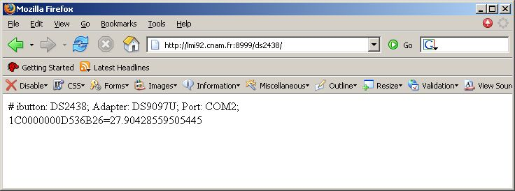
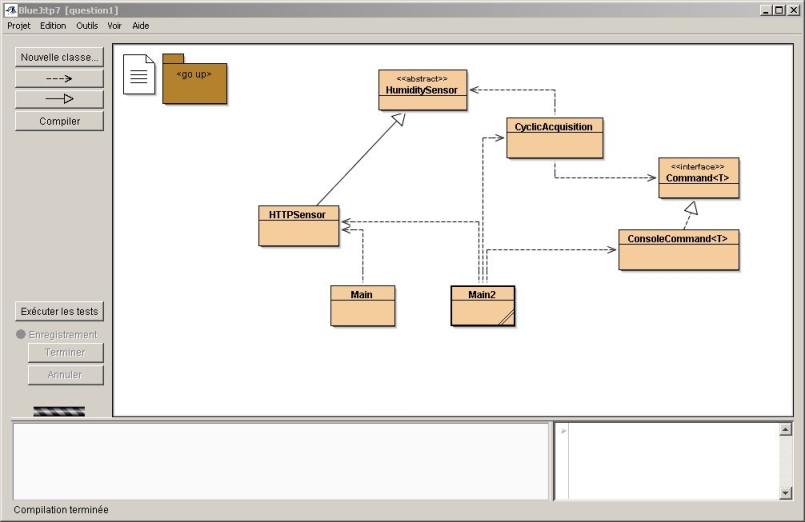
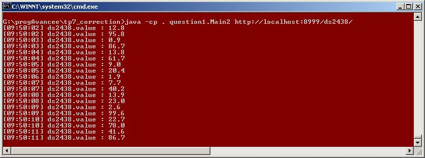
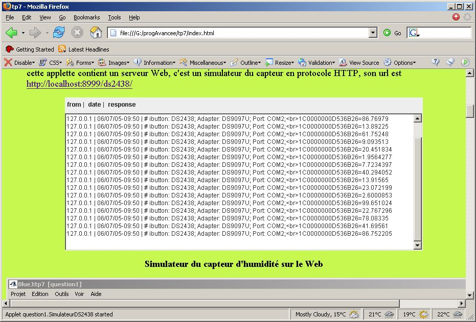
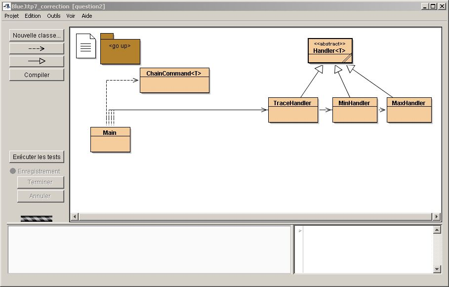
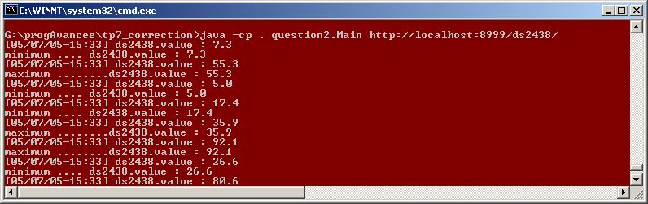
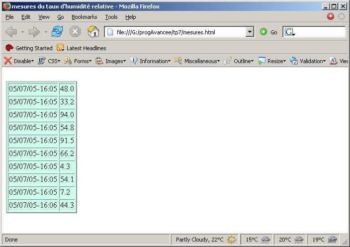
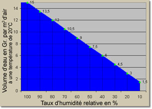
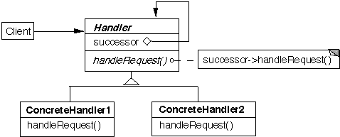

![[Image]](question1.jpg) Acquisition cyclique
Acquisition cyclique
Tp5
|
|
Acquisition cyclique
Il s'agit de lire les valeurs d'un capteur accessible sur internet, en protocole HTTP.

le source de cette page :
| # ibutton: DS2438; Adapter: DS9097U; Port: COM2;<br>1C0000000D536B26=27.90428559505445 |
(1C0000000D536B26 représente le numéro du composant, 27.90428559505445 le taux d'humidité relative)
depuis le répertoire du tp :
rep_du_tp5> java -cp AppliSimulateurDS2438.jar question1.AppliSimulateurDS2438
Cette application contient un serveur Web sur le port 8999, par défaut inaccessible depuis un autre poste.
L'url pour les requêtes devient alors http://localhost:8999/ds2438/
Vous pouvez cliquer ! (réponse dans une nouvelle fenêtre du navigateur).
Observez aussi les traces dans la fenêtre DOS (ou Terminal) :
le site client, localhost ou 127.0.0.1, puis date et heure de la requête, puis la réponse retournée au client HTTP.AIDE : Si localhost ne fonctionne pas sur un PC à l'ESIEE, remplacer ce terme par le nom de votre PC (voir étiquette sur le PC ou prompt sous linux). C'est généralement pcxxxxn où xxxx représente le numéro de la salle de TP et n la lettre de votre PC. Si ça ne fonctionne toujours pas, ajoutez .esiee.fr après pcxxxxn.
Architecture présentée :

HumiditySensor reflète ce que l'on attend d'un capteur : une valeur, et la période minimale de lecture
HTTPSensor le capteur au protocole HTTP, d'autres types capteurs pourraient être installés
Main et Main2 sont des applications Java, qui doivent s'exécuter dans une fenêtre DOSCyclicAcquisition effectue une acquisition périodique de la valeur du capteur et transmet cette information
Command<T> est une interface qui propose le traitement d'une information de type T, ici une valeur du capteur
ConsoleCommand<T> se contente d'afficher T et l'heure courante
.1)
Complétez la classe Main, en affichant, pour l'instant, le résultat de 2
requêtes au capteur.
ouvrez une fenêtre DOS>
Si DOS ne trouve pas la commande java, tapez :
SET PATH="C:\Program Files\java\jdk....\bin";%PATH%
où jdk.... est le répertoire de la dernière version du
JDK. (pas du JRE !)
java -cp . question1.Main http://localhost:8999/ds2438/ en mode simulé
Aide : si vous êtes en mode simulé, n'oubliez pas de laisser tourner AppliSimulateurDS2438 dans une fenêtre DOS (ou Terminal) ...
Aide : Erreur 503 ==> mauvais nom de machine
.2)
A] Complétez la classe HTTPSensor en implémentant la méthode value()
Cette méthode a la signature suivante :
public float value() throws Exception;
La valeur retournée aura un seul chiffre après la virgule (non par arrondi, mais par troncature).
Séparez l'extraction de la String du calcul de la troncature !
Exemples de calcul : 1.23456 → 12.3456 → 12 → 1.2 OU 98.7654 → 987.654 → 987 → 98.7
Pour répondre à cette question, vous pouvez utiliser la
classe java.util.StringTokenizer
Ne pas utiliser split(). Quel délimiteur choisir ? Quel token contient alors l'information désirée ? (nul besoin de boucle !)
Comprendre l'exemple en tête de la javadoc peut aider à comprendre le fonctionnement de StringTokenizer.
B] Complétez de nouveau la classe Main, en remplaçant le résultat des 2 requêtes par seulement les 2 valeurs. (les properties sont inutiles dans notre cas)
.3)
Complétez la classe CyclicAcquisition,
contenant un Thread local.
Ce Thread permet l'acquisition cyclique du taux d'humidité.
Remarquez le constructeur qui accepte en paramètres un capteur, une période, et une commande.
La période d'acquisition doit être respectée en utilisant la méthode minimalPeriod() de la classe HumiditySensor, cette version néglige le temps de communication : Requête HTTP et analyse du résultat.
Si une exception survient pendant la requête, retourner la valeur -1.
L'information reçue est affichée sur la console par une implémentation de l'interface Command<T>, ici ConsoleCommand<T>.
Utilisez la classe Main2 pour tester CyclicAcquisition; le programme doit s'arrêter au bout de 2 secondes.
ouvrez une fenêtre DOS>
Rappel : si vous êtes en mode simulé, n'oubliez pas de laisser tourner AppliSimulateurDS2438 dans une fenêtre DOS (ou Terminal) ...
Un exemple de traces possible, ici en utilisant le simulateur (la période minimale est de 500ms)

L'application AppliSimulateurDS2438 (qui tourne toujours dans une fenêtre DOS (ou Terminal) doit afficher :

 Chaîne de responsabilités
Chaîne de responsabilités
L'information reçue, le taux d'humidité, est
maintenant transmise à différents consommateurs
(responsables...). Les consommateurs sont chainés entre eux. Ce
type de conception est issu du pattern "chaîne de responsabilités".
Le principe est de transmettre l'information à une chaîne de
consommateurs, chaque consommateur décide s'il doit laisser
passer l'information vers son successeur ou bien arrêter sa
propagation (l'ordre a donc de l'importance ...).
.1)
Proposez une première "Chaîne de
responsabilités" constituée de 3
"Handlers"
liée à notre application de lecture cyclique du taux
d'humidité et complétez les classes Main, MinHandler et
MaxHandler.
Attention ! Respectez les formats d'affichage montrés
dans la fenêtre DOS ci-dessous ;
l'ordre de chainage a de l'importance, mais on doit pouvoir
inverser l'ordre de MinHandler et MaxHandler.

Architecture retenue :
Handler<T>, TraceHandler, MinHandler, MaxHandler les gestionnaires attendus
ChainCommand<T> convertit la "commande" vers une chaîne de responsabilités
Main est une application Java, qui doit s'exécuter dans une fenêtre DOS
ouvrez une fenêtre DOS>
Une Trace
d'exécution possible

|
.2)
Ajoutez le maillon FileHandler dans la chaîne et au bon
endroit.
Ce 'handler' est chargé de la sauvegarde sur fichier des mesures
obtenues.

Aide : Comment est produit l'objet Date dans l'exemple de code ci-dessus (avec Calendar) ?
Humidité Relative : définition
extraite de http://www.credo.fr/fr/monde_credo_world/humidite_relative.htm
L'Humidité Relative (HR) exprime le rapport entre la quantité
effective de vapeur d'eau dans un volume donné d'air et la
quantité maximale que ce volume peut contenir à la même
température.
L'eau s'évapore dans l'atmosphère jusqu'à ce que soit atteinte
une proportion maximale de vapeur d'eau dans l'air, dite
humidité saturante.
Quand cette condition est atteinte, la moindre chute de
température provoque la condensation de la vapeur et
l'apparition de minuscules gouttes d'eau. Il s'agit du
phénomène de rosée.
La saturation de l'air en vapeur d'eau (ou point de rosée)
correspond donc à 100 % d'humidité relative.
La quantité de vapeur d'eau dans l'air à 100 % HR est
d'environ 15 grammes d'eau par mètre cube d'air.
Quand la quantité de vapeur d'eau dans l'air est en deçà de la
saturation, l'humidité relative est infèrieure à 100 %.
A peu de choses près, une HR de 70 % correspond à une quantité
d'eau par mètre cube d'air de 70 % de la quantité présente à
saturation: environ 10,5 grammes d'eau par mètre cube d'air.
Design Pattern et UML
extrait de http://www.eli.sdsu.edu/courses/spring04/cs635/notes/chain/chain.html
